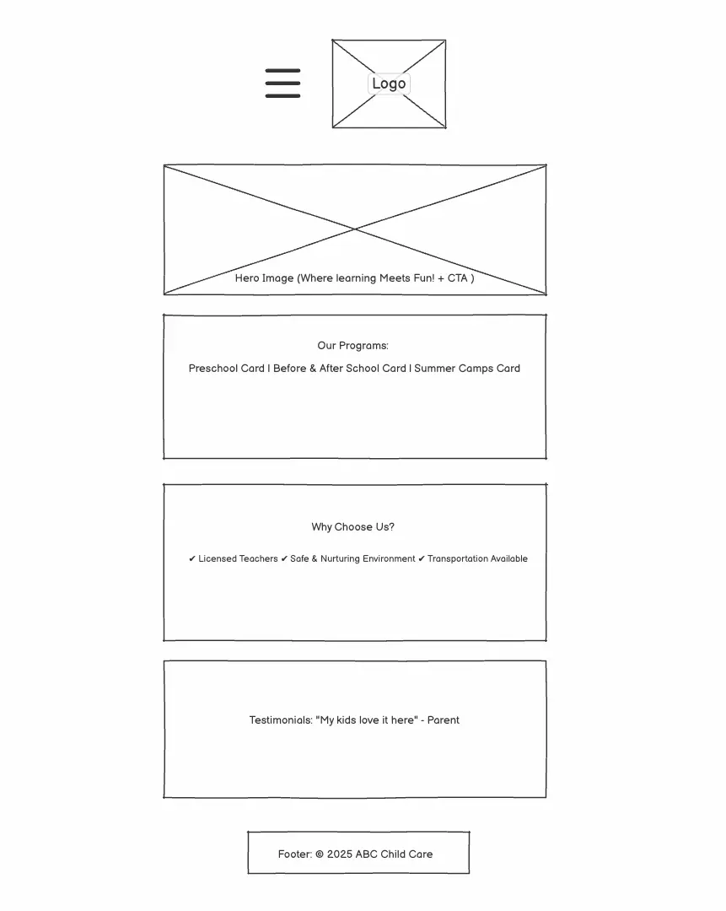
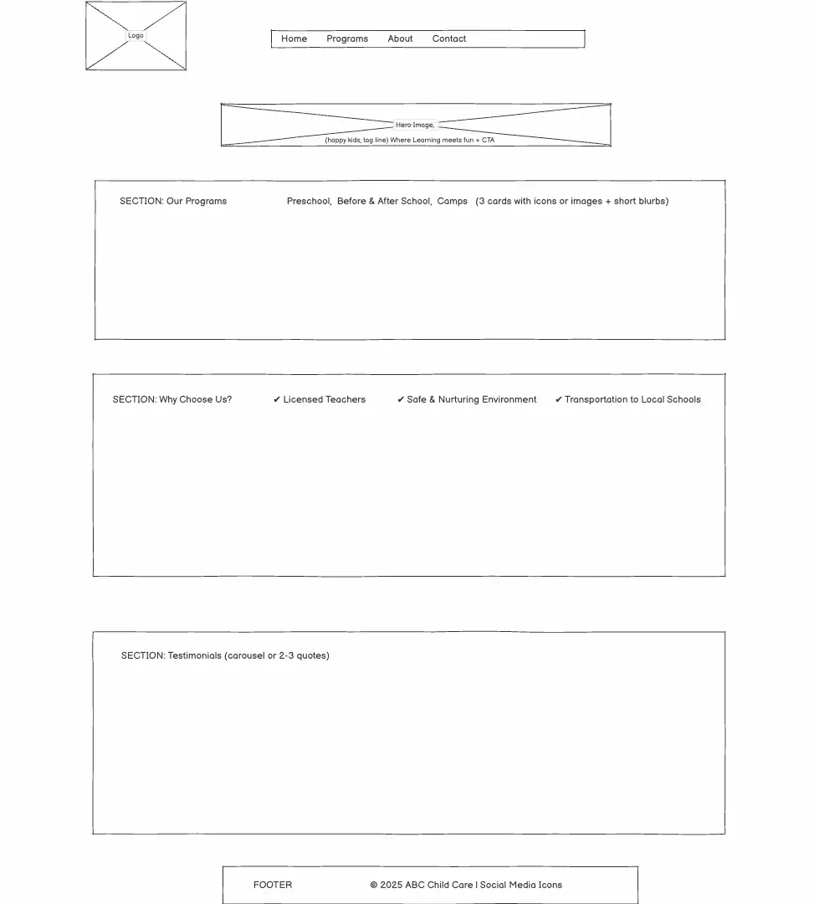

Site Name
BrightPath Child Care
This name was chosen because it conveys a sense of guidance, growth, and positive development for children. It represents a trustworthy and nurturing environment where children are supported on their learning journey.
Optional domain: brightpathkids.org
Site Purpose
The website’s purpose is to inform families about the different child care programs offered at BrightPath Child Care, including preschool, before and after school care, and summer camps. The site will outline program details, curriculum highlights, and age group information. It will also include contact forms, enrollment details, and testimonials to help parents make informed decisions.
Scenarios
- What are the age requirements and schedules for your preschool program?
- Do you offer transportation for before and after school care?
- What kinds of activities are included in your summer camp program?
Color Scheme
| Color | Hex Code | Usage |
|---|---|---|
| Primary Blue | #0268B4 | Used for headers, navigation bar, and call-to-action buttons. |
| Accent Yellow | #FFD257 | Used for highlights, icons, and buttons to give a warm, welcoming feel. |
| Soft Gray | #F5F5F5 | Used for background areas to maintain readability and contrast. |
| White | #FFFFFF | Used for content sections and typography contrast. |
Typography
| Font | Use |
|---|---|
| Poppins | Used for headings and subheadings; modern, friendly, and readable. |
| Open Sans | Used for body text; clean and highly legible on screens. |
| Pacifico | Used sparingly for logo or call-to-action highlights to add personality and warmth. |
Wireframe
Mobile Version
Desktop Version
Example: Mobile and Desktop layout diagrams showing navigation, hero section, and program cards.